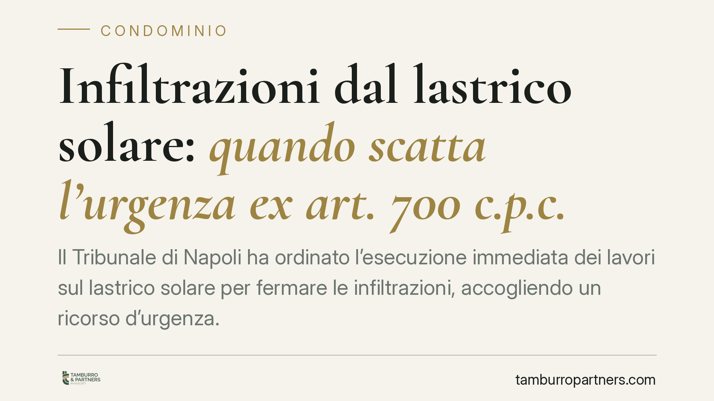

Infiltrazioni dal lastrico solare: quando scatta l'urgenza ex art. 700 c.p.c.
Il Tribunale di Napoli ha ordinato l'esecuzione immediata dei lavori sul lastrico solare per fermare le infiltrazioni, accogliendo un ricorso d'urgenza. La decisione conta perché anteponendo il rischio per la salute al semplice danno economico, apre la strada a una tutela rapida quando l'assemblea tarda ad agire. Un precedente utile per molti condòmini.

Il fatto
Un condomino, esasperato dalle infiltrazioni provenienti dal lastrico solare, si è rivolto al Tribunale di Napoli (ottava sezione civile) con un ricorso d'urgenza. Nonostante l'assemblea avesse già deliberato i lavori di manutenzione, questi non erano mai partiti. L'acqua continuava a penetrare, con formazione di muffa e umidità negli ambienti abitati.
Il giudice ha accolto la domanda e ordinato al condominio di eseguire immediatamente gli interventi di ripristino. L'elemento decisivo non è stato il danno economico alle strutture, ma il pregiudizio concreto alla salute degli occupanti.
Inquadramento normativo
Lo strumento utilizzato è l'art. 700 c.p.c., che consente a chi teme un pregiudizio imminente e irreparabile al proprio diritto di ottenere dal giudice un provvedimento d'urgenza, anticipato rispetto alla causa ordinaria. Si parla di tutela "atipica" perché non ha un contenuto predeterminato: il giudice modella l'ordine sulla concreta esigenza di protezione.
Perché il ricorso sia accolto servono due presupposti. Il primo è il *fumus boni iuris*, cioè l'apparente fondatezza del diritto fatto valere. Il secondo è il *periculum in mora*, il pericolo che l'attesa dei tempi ordinari renda vana la tutela. Nel caso delle infiltrazioni, il periculum si lega alla progressione del danno e, soprattutto, alla sua ricaduta sulla salubrità dell'abitazione.
Sul piano sostanziale rileva anche l'art. 1126 c.c. in tema di lastrico solare in uso esclusivo, che ripartisce le spese di riparazione tra chi ne ha l'uso e gli altri condòmini. La manutenzione delle parti comuni resta comunque un obbligo del condominio nel suo complesso.
Perché questa decisione è significativa
Il punto qualificante è la gerarchia tra interessi. Il Tribunale ha chiarito che un danno meramente patrimoniale — pur rilevante — di norma può attendere il giudizio ordinario, essendo risarcibile per equivalente. Diverso è il caso in cui l'infiltrazione genera muffa e umidità persistenti: qui entra in gioco la salute, diritto che non si ripara con un indennizzo tardivo.
Altrettanto importante è il rapporto con la delibera assembleare. Il condominio aveva già approvato gli interventi, ma non li aveva avviati. Il giudice ha stabilito che l'esistenza di una delibera non eseguita non esclude l'urgenza, anzi la conferma: se l'organo deputato ha riconosciuto la necessità dei lavori ma resta inerte, il pericolo per il condomino è ancora più evidente.
Implicazioni pratiche
Per il condomino danneggiato la pronuncia conferma l'esistenza di una via rapida quando le infiltrazioni incidono sulla vivibilità dell'immobile e l'amministrazione non interviene. Non occorre attendere l'esito di una causa che può durare anni: documentando il nesso tra infiltrazione e rischio sanitario, è possibile ottenere un ordine immediato di esecuzione.
Per il condominio e per l'amministratore, al contrario, il messaggio è di segno opposto. L'inerzia nell'esecuzione di lavori già deliberati espone a provvedimenti d'urgenza, con tempi stretti e possibili condanne alle spese. Non basta approvare: occorre attuare.
Resta inteso che ogni caso va valutato singolarmente. L'accoglimento dipende dalla prova concreta del pericolo e dalla qualità della documentazione prodotta.
Cosa fare in concreto
- Documenta subito il danno: fotografie datate, eventuale perizia tecnica e, dove possibile, una valutazione sulla salubrità degli ambienti (presenza di muffa, umidità, agenti nocivi).
- Formalizza le richieste al condominio: invia una diffida scritta all'amministratore, con sollecito all'esecuzione dei lavori e indicazione di un termine.
- Conserva le delibere: raccogli i verbali assembleari che dimostrano la decisione presa e la successiva inerzia.
- Valuta il ricorso ex art. 700 c.p.c. solo dopo aver verificato la sussistenza di un pericolo concreto e non rinviabile, preferibilmente con l'assistenza di un legale.
- Se sei amministratore, dai priorità all'esecuzione degli interventi deliberati: la tempestività riduce il rischio di contenzioso.
---
*Contributo informativo a cura di Tamburro & Partners - Avv. Giuseppe Tamburro. Non costituisce parere legale.*
Ogni condominio ha una storia a sé.
Se gestisci un'amministrazione e vuoi un confronto su una specifica questione condominiale, scrivi allo studio. Ti rispondiamo entro un giorno lavorativo.